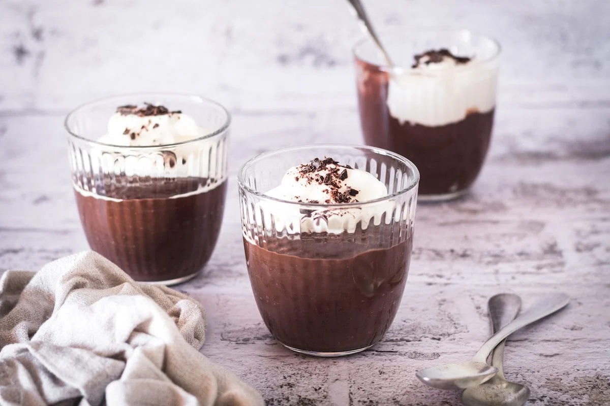

Chocolate Cream Pudding
Sugar, cornstarch, milk and unsweetened chocolate are cooked, thickened with egg yolks, cooked some more and then flavored with butter and vanilla before chilling.

Ingredients
- 1 cup white sugar
- 2 tablespoons cornstarch
- ¼ teaspoon salt
- 2 cups milk
- 2 (1 ounce) squares unsweetened chocolate, chopped
- 2 egg yolks
- 2 tablespoons butter
- 2 teaspoons vanilla extract
Steps
- In a medium saucepan over medium heat, combine sugar, cornstarch and salt. Stir in milk and chocolate. Cook, stirring constantly, until chocolate melts and mixture thickens. Remove from heat and stir in egg yolks. Return to heat and cook 2 minutes more. Remove from heat and stir in butter and vanilla. Chill before serving.
Nutrition Facts
Per Serving: 282 calories; protein 4.8g; carbohydrates 42.7g; fat 11.8g; cholesterol 85mg; sodium 162.8mg. Full Nutrition